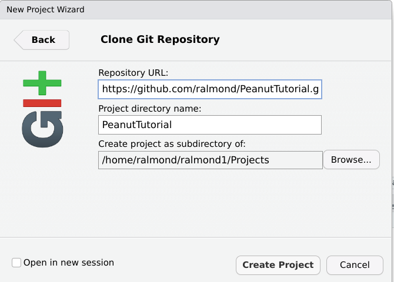

Code
sudo apt install wine64
curl https://norsys.com/downloads/Netica_Win.exe > Netica_Win.exe
wine64 Netica_Win.exe
wine64 "C:\\Netica\Netica 609\Netica.exe"
These web pages are available in both a static version (https://pluto.coe.fsu.edu/PeanutTutorial) and a source version (https://github.com/ralmond/PeanutTutorial.git).
The easiest way to access the Peanut tutorial is to use R Studio. Go to new project, and select “From Version control”, then “Git” then put ‘https://github.com/ralmond/PeanutTutorial.git’ in the ‘Repository URL’ box.

The .qmd files contain a mixture of text and R code. You will need to download the quarto package for these to work properly, but R Studio will guide you through this.
There are a number of packages that will do the basic Bayesian network computations. For the purposes of this tutorial, we are using NeticaⓇ. Netica is available in two versions: a graphical user interface (GUI) version and an application programmers interface (API). We will use both in this class.
Netica also comes in both a free (but not open source) version and a paid version. The paid version is used by purchasing an unlock code from Norsys. The free version is specifically for training and evaluation. It is limited in the size of the networks, but it has sufficient capacity for most of the exercises in this tutorial.
https://norsys.com and download the latest version of Netica.exe.Netica.exe runs without major problems under Wine64.sudo apt install wine64
curl https://norsys.com/downloads/Netica_Win.exe > Netica_Win.exe
wine64 Netica_Win.exe
wine64 "C:\\Netica\Netica 609\Netica.exe"<<<<<<< HEAD - Mac OS Intel – I have built a wineskin version of Netica.exe. It is available at https://pluto.coe.fsu.edu/MacNetica2.app.zip (You may need to right click on the app, and then open the Wineskin app inside). - Mac OS ARM – I don’t have access to an ARM Mac to do testing. I am seeing reports that the latest version of Wine supports Rosetta. If you are using homebrew, you can try: ======= - There is also a version of Cross Over for Linux; this uses the same Wine code base, but provides 1-year technical support. There is also a 30-day free trial.
Mac OS. A couple of options:
Prebuilt wineskin. I’ve used the wineskin tool to pre-wrap an image. This is available at NeticaMac.dmg.
System Preferences... and go to the Security & Privacy tab. Unlock (requires admin password) and then select “App Store and identified developers”. Click on the “NeticaSilicon.app”, this will give an error message. Go back to the security and privacy tab, and a button asking if you want to run the application should be there. Click it to give it permission to run.NeticaSilicon.app to someplace on your computer, I’m assuming you are copying it to /Applications. Then open a terminal and type xattr -c -r /Applications/NeticaSilicon.app (change the location if you installed the file someplace else). This may give a few error messages, but it should now work.Install Wine If you are using homebrew, you can try: >>>>>>> 1b8aba9584e85d6ddafaae1e8ed80053a7dbf65f
brew install --cask wine-stable
curl https://norsys.com/downloads/Netica_Win.exe > Netica_Win.exe
wine Netica_Win.exe
wine "C:\\Netica\Netica 609\Netica.exe"Note, these all install the unlicensed version of Netica. You will still need to purchase a license key from Norsys (https://norsys.com). Note that GUI license key and the API license key needed for RNetica, are separate purchase. (You can buy a combined key but it is twice as expensive).
Brent Borelange (Norsys CEO) has expressed willingness to support Netica run under Wine/Crossover. (I have not had problems.)
The R package RNetica provides an R binding of the Netica API (hence, it requires the API and not GUI license). RNetica is available at https://ralmond.r-universe.dev/ (source code is at https://github.com/ralmond/).
If you have not already done so, we recommend downloading R Studio, in the process of installing R Studio, you will need to install R itself (<https://cloud.r-project.org/).
Once you have R installed, you can install RNetica and running related packages by running the following code:
if (!require('PNetica'))
install.packages(c('CPTtootls','RNetica','Peanut','PNetica'),
repos = c('https://ralmond.r-universe.dev', 'https://cloud.r-project.org'))Loading required package: PNeticaLoading required package: RNeticaLoading required package: CPTtoolsLoading required package: PeanutThis bundle contains the following packages:
CPTtools — A collection of functions for making conditional probability tables. (Does not depend on Netica.)RNetica — An R binding of the Netica API. Note that the installer downloads and installs Netica, so cognizant of the Netica License.Peanut — An object oriented layer for working with parameterized networks (PNets).PNetica — All of the Netica specific implementation of the Peanut protocol.The intention is that Peanut (and CPTtools) are open implementation protocols that are independent of the specific Bayes net implementation. I’m currently looking for volunteers to build the equivalent of PNetica for other Bayes net engines.
If you purchase a license key from Norsys, I recommend putting it into the .Renviron file in your home directory.
#|eval: false
NETICA_LICENSE_KEY="+AlmondR/FloridaStateU/120,310-6-A/XXXXX"The RNetica package will set the license key from this variable if it is present when it launches.
The following zip files contain the sample networks used in the tutorial. (If you have downloaded the complete tutorial from github, you have already downloaded these and can skip this step.)
Download these and unzip them in the directory from which you will be running R.
(If you put them somewhere else, you may need to adjust scripts to point to the right directory.)